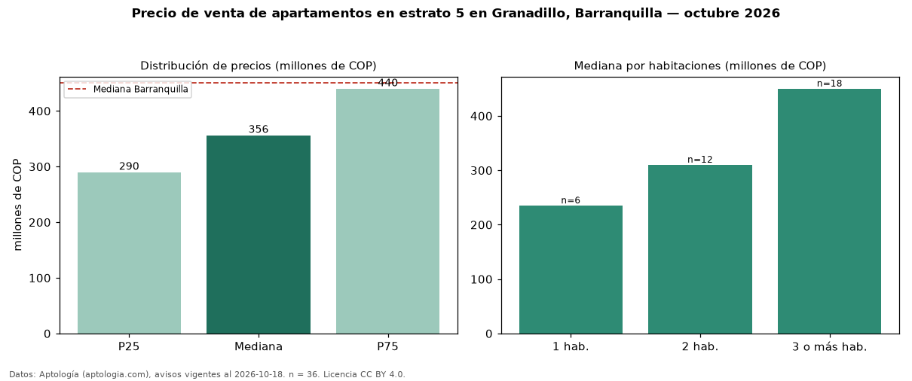

Precio de venta de apartamentos en estrato 5 en Granadillo, Barranquilla — octubre 2026
En Granadillo, Barranquilla, la mediana de precio de venta de apartamentos en estrato 5 es COP 356 millones, según 36 avisos vigentes. Eso es 9 % menos que la mediana de toda la vivienda de estrato 5 de Granadillo (COP 390 millones, n = 51); este segmento reúne el 71 % de esos avisos. Por metro cuadrado, la mediana es COP 4,19 millones/m² (n = 35), 0 % por debajo del conjunto de referencia (COP 4,19 millones/m²). El área mediana anunciada es 91 m². El segmento con más oferta es el de 3 o más habitaciones (18 avisos, mediana COP 450 millones); pasar de 1 habitación a 3 o más habitaciones cambia la mediana +91 %. La administración mediana declarada es COP 500.000 al mes (n = 33). La mediana de todos los apartamentos en venta de Barranquilla es COP 450 millones (−21 % de diferencia). La mitad central de los avisos va de COP 290 millones a COP 440 millones (razón 1,5), una dispersión moderada. Datos: Aptología (aptologia.com), CC BY 4.0 — https://www.aptologia.com/venta/barranquilla/granadillo. Archivos: PDF, CSV con las cifras y gráfica PNG.

| Avisos únicos | 36 |
|---|---|
| Percentil 25 | COP 290.000.000 |
| Mediana | COP 356.500.000 |
| Percentil 75 | COP 440.000.000 |
| Mediana por m² | COP 4.191.176 |
Fuente: avisos vigentes de portales inmobiliarios recopilados por Aptología, deduplicados (mínimo 30 avisos únicos por celda). Precios pedidos, no cerrados. Fecha: 2026-10-18.